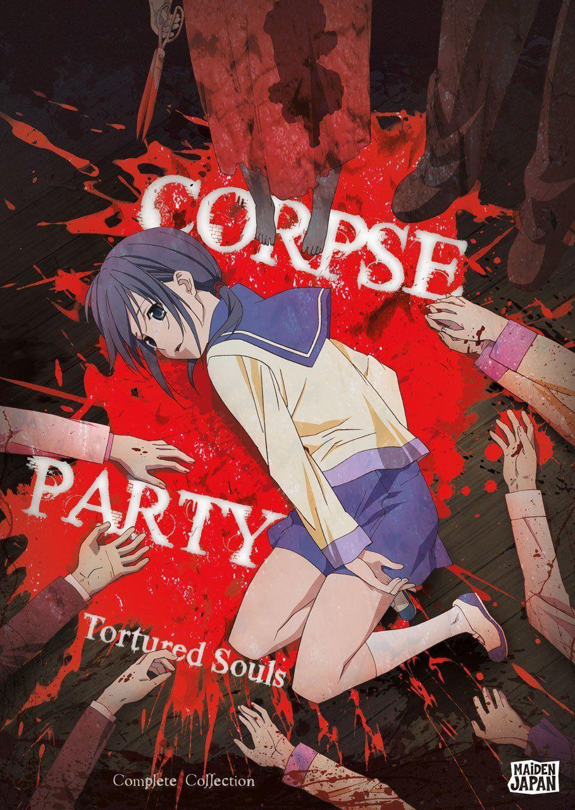

Corpse Party - Shōichi Satō

Overview & Recap
'Corpse Party' is a horror anime based off of the game. It follows a group of highschoolers who are transported to an elementary school where a lot of kids and just people in general were murdered. I personally did not find the anime gorey or scary but there are a lot of scenes of mutilated corpses and just people's intestines so dont watch it if you are scared of stuff like that :)
Review
The anime is really short (its 4 eps that are abt 30 min each so its kinda like a 2 hr movie) so its a very easy watch. i personally thought the storyline was very cliche and overdone cus its like the basic "our school is built on the land where people die, highschoolers do rituals and suddenly end up in said murder land, they have to try find a way out". I think the only bit different about this was how it reminded me of an escape room where they had to find clues and stuff to actually get out. The ending was also very... interesting and unexpected (watch it urself to find out what happens, unless you cant do horror then dm me and ill tell you the basic story)
Rating
hmhmhmhmhmhm probably a 1.5/5 because it wasnt scary at all and i watched it bc its meant to be scary, the plot and characters were kinda cliche and it was predictable (except for like the last minute).